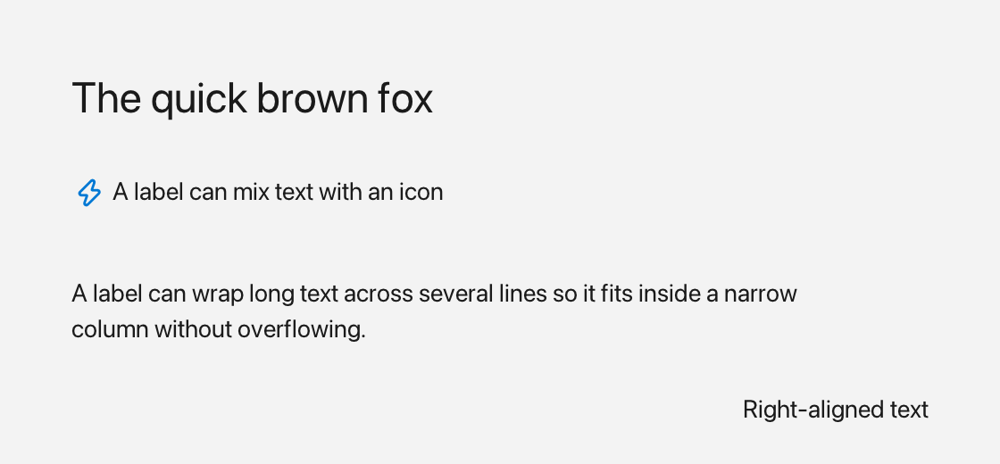

Label
A Label displays static text, either as a plain string or as rich Inline content (text + icons + colors), and can optionally wrap at word boundaries.

Regular, icon and wrapped text, plus a right-aligned line.
What it's for
Use a Label whenever you need read-only text inside a window. It renders its text inside its Rect, supports horizontal and vertical alignment, word wrap, and auto-sizing from content. Since a label never reacts to clicks, reach for a Button when you need something clickable.
The words you need
Inline— content made of one or more runs of text and icons. A label can show either a plain string orInlinecontent.$()— a shorthand that builds anInlinefrom the pieces you stream into it with<<. For examplefluffy::$(fluffy::Icons::rocket << " Launch")puts an icon and the text " Launch" together. See Inline and Icons.- bounds — where the label sits and how big it is, given as a
Rect. See Geometry & colors.
In the examples below, win is an open window (see Window).
A first example
auto& lbl = win.add<fluffy::Label>("Hello");
lbl.setBounds(fluffy::Rect{40, 40, 200, 32});
lbl.setText("New text");
std::string t = lbl.text();
win.add<fluffy::Label>(...) creates the label inside the window and returns a reference to it. setBounds places it, setText replaces the text, and text() returns the current plain text.
Common tasks
Show rich content with icons and colors
Use setInline to display Inline content made of Color, Icons::*, and Style values:
lbl.setInline(fluffy::$(fluffy::Icons::rocket << " Launch")); // Inline content is write-only
Inline content is write-only, so read back the plain text with text() when you need a value.
Align the text
Set the horizontal and vertical alignment independently. Both setters return Label&, so you can chain them:
lbl.setHorizontal(fluffy::Label::Align::Center); // both return Label& (chainable)
lbl.setVertical(fluffy::Label::Align::Center); // Center doubles as vertical middle
The vertical alignment reuses the same Align enum, where the values act as top/middle/bottom.
Wrap text and auto-size the label
Word wrap is controlled with setWordWrap, and the current setting is available through wordWrap:
lbl.setWordWrap(true);
bool w = lbl.wordWrap();
To let the label grow with its content, use setAutoSize:
lbl.setAutoSize(fluffy::AutoSize::Both); // height grows to fit wrapped lines
naturalWidth() and naturalHeight() return the size needed for the current text or inline content. When wordWrap is on, the natural height accounts for the wrapped lines.
Load a label from YAML
Label:
text: "Hello, World!"
x: 40
y: 40
width: 200
height: 32
align: center
YAML alignment keys are align (sets both axes), horizontal_align, and vertical_align. There is no word_wrap key, so word wrap stays at its code default (true) for YAML-loaded labels. A color key is parsed but currently has no effect.
Good to know
- Setting
textclears any previousInline; settinginlinereplacestext. Labeldoes not fire user events. UseButtonfor clicks.- All
Widgetproperties also apply:bounds,visible,enabled,font,textSize,autoSize, anduserdata.
Quick reference
Properties
| Property | Type | Description |
|---|---|---|
text |
string |
Plain text. Setting it clears any previous Inline. |
inline |
Inline |
Rich content (Color + Icons::* + Style). Setting it replaces text. |
align / horizontal / vertical |
Align {Left,Center,Right} |
How text sits inside the rect (vertical reuses the same enum as top/middle/bottom). |
wordWrap |
bool |
true wraps at word boundaries using the label width. Default true. |
Methods
auto& lbl = win.add<fluffy::Label>("Hello");
lbl.setBounds(fluffy::Rect{40, 40, 200, 32});
lbl.setText("New text");
std::string t = lbl.text();
lbl.setInline(fluffy::$(fluffy::Icons::rocket << " Launch")); // Inline content is write-only
lbl.setHorizontal(fluffy::Label::Align::Center); // both return Label& (chainable)
lbl.setVertical(fluffy::Label::Align::Center); // Center doubles as vertical middle
lbl.setWordWrap(true);
bool w = lbl.wordWrap();
lbl.setAutoSize(fluffy::AutoSize::Both); // height grows to fit wrapped lines
Events
Label does not fire user events. Use Button for clicks.